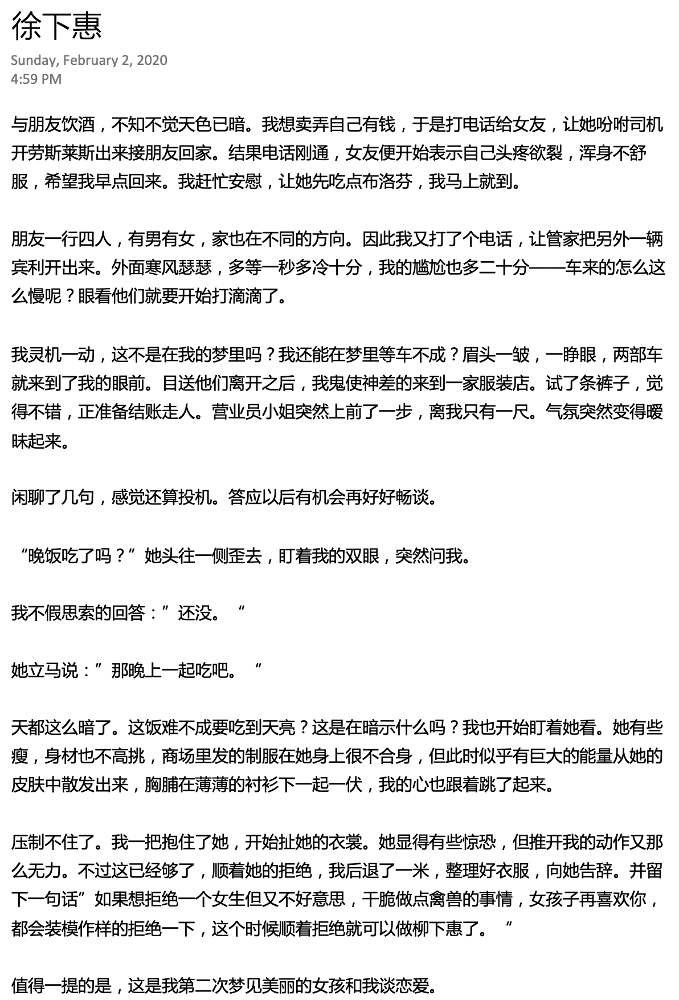

禽兽与禽兽不如最近的事情，本来是人吃禽兽，后来冒出来的禽兽比吃掉的还多。禽兽不如的也不甘示弱，纷纷出来抢戏。戏看的过瘾，骂的也来劲，回头禽兽与禽兽不如定是要自罚三杯了，喝高兴了醉酒免不，顺带把老虎也灌醉，大家吃着火锅唱着一家亲的歌，快活！只是如今醉了没有公主可搂，惆怅！ 以前总说全国人民这么多，唾沫都能淹死人。但在唾沫星子里游多了，水性也大涨 ，随便几口浓痰，转身一抹脸就能在公主怀里乐开了花。哪怕是这几天的唾沫带“毒”，公主们也能上上下下，里里外外舔个干净。现在没公主了，在公众面前满面愁容，也是可以理解。情绪不好，工作便无法展开了。 所以，问题都出在公主上。好在我们生活在信息化社会，虽然房产证不联网，禽兽的财产也无处可查（毕竟是禽兽，怎么会有人的财产），身份证也能造假，但公主们的信息都是登记在数据库里。公主牌 50 领一个，狗牌 150 一个，做公主这么便宜，也就不奇怪上海有 50 万公主，北京有一万余家城堡了。于是乎，一只禽领一位公主，一头兽牵一位格格，天下就可以太平。考虑到它们往往肚子大到看不见屌，行动颇为不便，还是得劳烦下司机把公主接到府邸。其实也不算特别麻烦，就像去“红十八减八字会”领口罩一样方便。 昨夜我便抱着这个切实可行，行之有效的方案入了梦乡。果不其然，我立马做了个“圣人梦”，大致如下： 呵！禽兽不如的家伙！势必会有人这么说我。这也是主流看法——非礼女孩是禽兽，女孩让你非礼你不非礼，便是禽兽不如。可终究忘了自己还可以做个人。 |